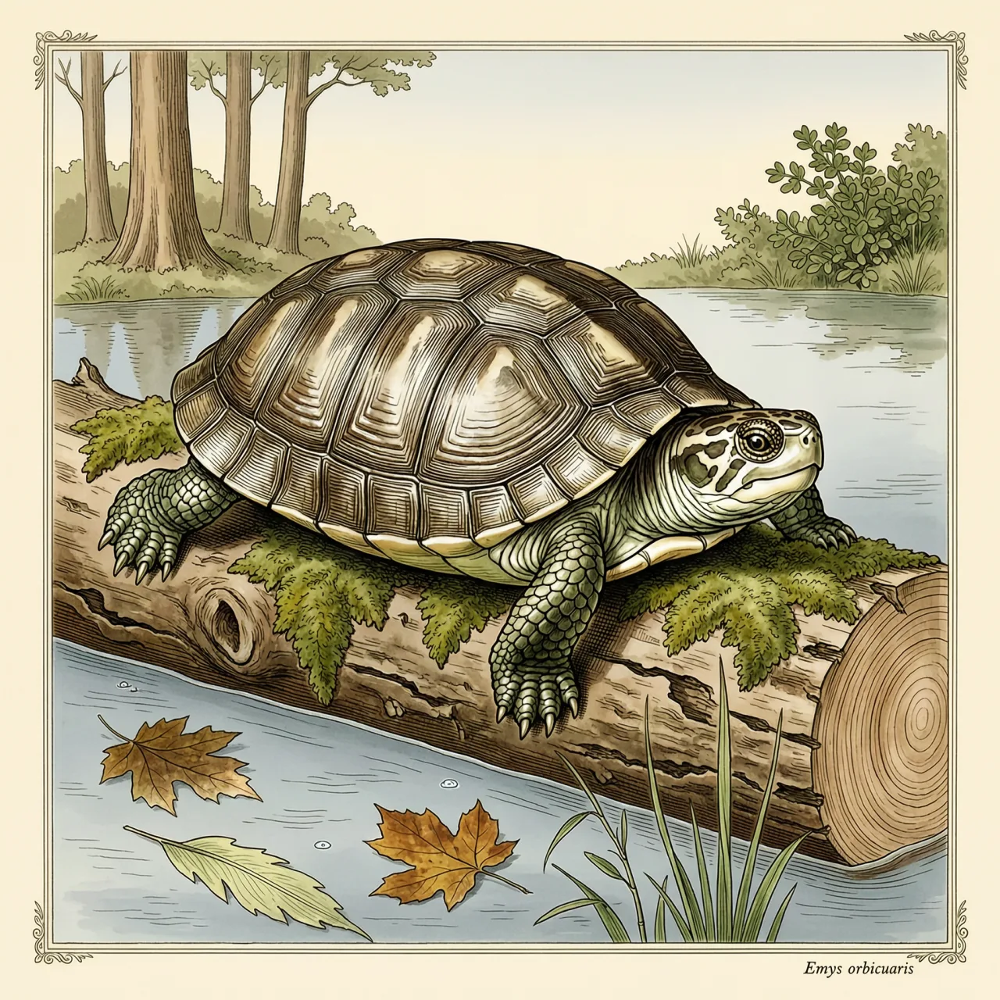
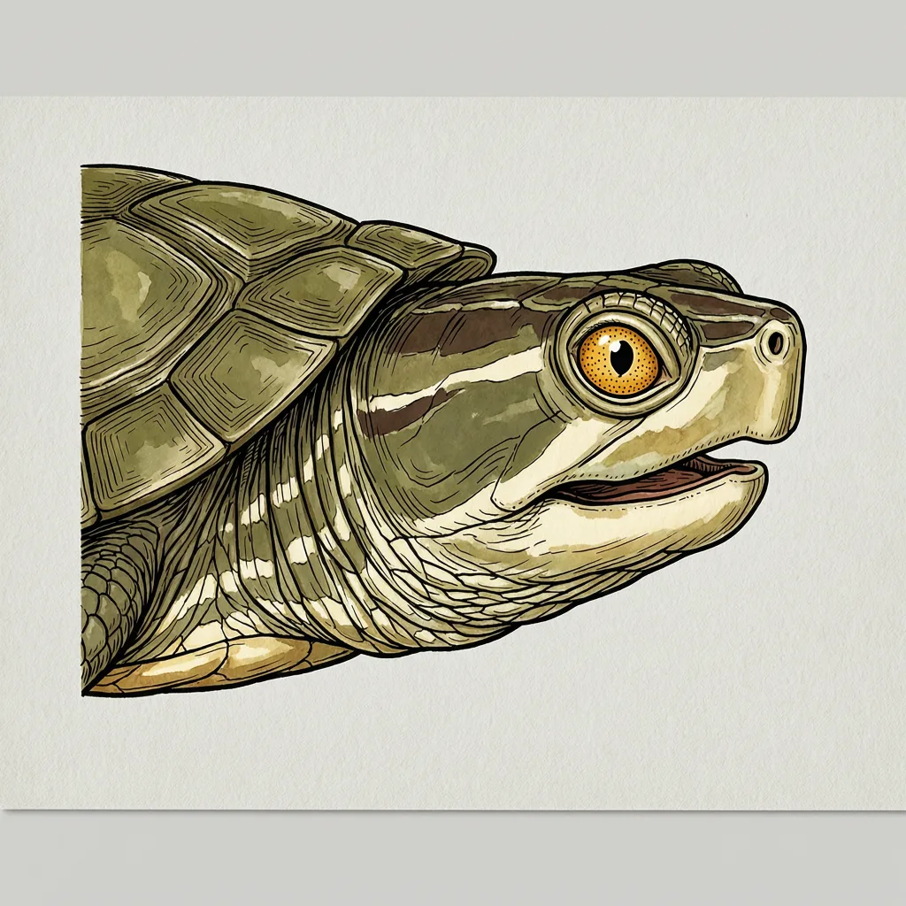

欧洲泽龟是欧洲本土的长寿淡水龟，栖息在被大片自然林木环绕的湿地，领地有时可延伸到距水1000米之外。入冬后它长期潜伏水底，不止靠肺呼吸，咽部与泄殖腔囊的黏膜可进行辅助气体交换。如今湿地排水与外来龟的竞争挤压其种群，IUCN 将其列为近危。
一片被大片自然树木环绕的池塘，是欧洲泽龟最典型的住处：浅水里有倒木和淤泥，岸外接着草地与林地。这个长寿的淡水物种一般被认为是水陆两栖——离不开水，领地有时却可延伸至距水1000米甚至4000米处。反过来，湿地一旦被排水开垦、水道被改成硬直的岸线，欧洲泽龟赖以活动的浅水与林木组合就断了。要找到它，可以先看眼睛：欧洲泽龟的虹膜上密布黄点。
入冬以后，欧洲泽龟长期潜伏在水底，整个季节都留在水里。它做得到这一点，是因为不止靠肺呼吸：咽部的黏膜与泄殖腔囊的囊壁上分布着血管，水经过这些部位时，可以完成一部分气体交换。静水塘底溶氧很低，单靠肺撑不过一冬，这几条辅助通道就是欧洲泽龟越冬的本钱。
还有一段冷门历史：直到18世纪初，欧洲泽龟在欧洲是受欢迎的斋戒食物。斋戒期间不许吃肉，而在水里生活的动物——从龟到水獭——都被归进鱼一类，端上餐桌不算破戒。今天压在欧洲泽龟身上的换成了别的事：湿地排水，加上外来龟带来的竞争，这个物种在 IUCN 红色名录上被列为近危。
